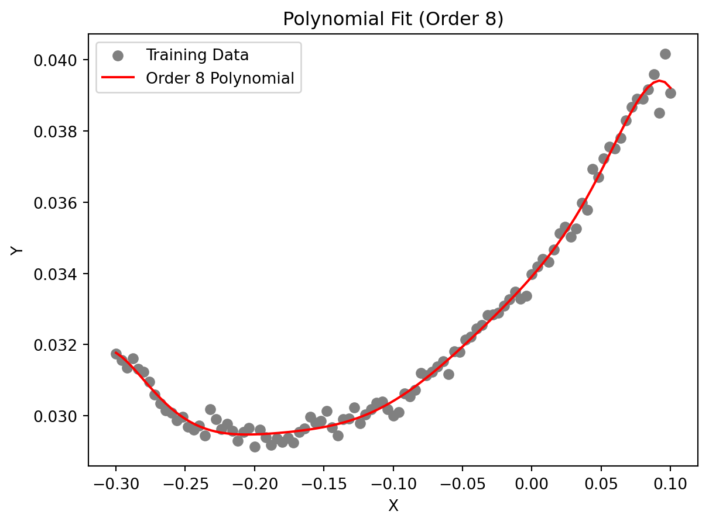
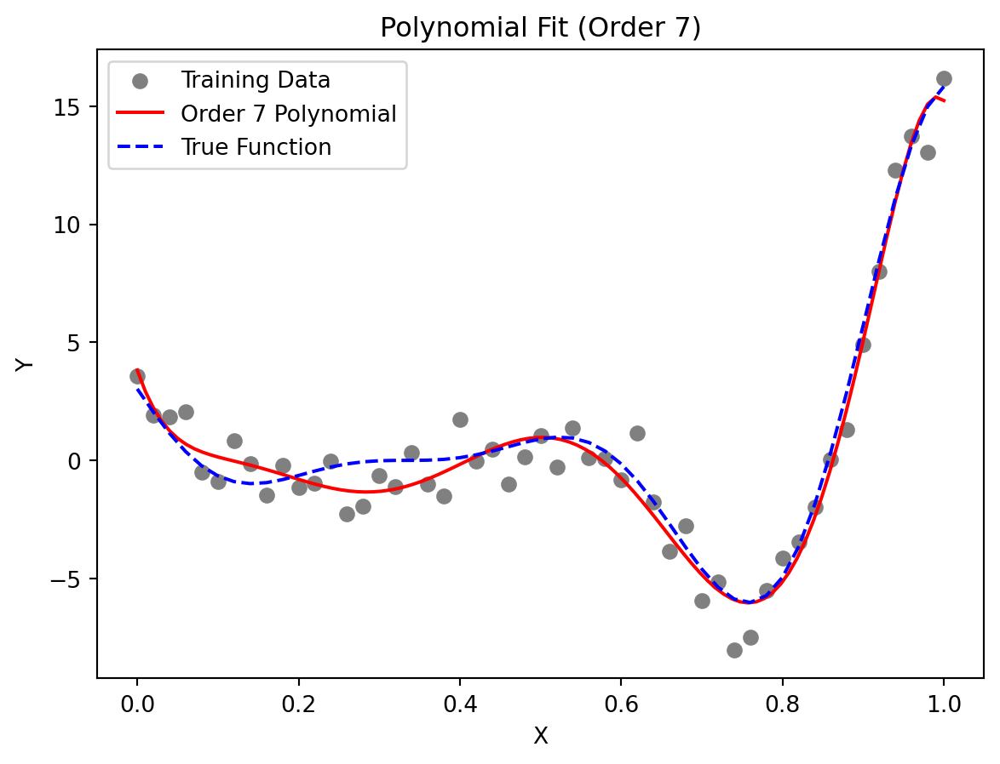

import numpy as np
import matplotlib.pyplot as plt6 Polynomial Models
NoteNote
- This section is based on chapter 2.2 in Forrester, Sóbester, and Keane (2008).
- The following Python packages are imported:
6.1 Fitting a Polynomial
We will consider one-variable cases, i.e., \(k=1\), first.
Let us consider the scalar-valued function \(f: \mathbb{R} \to \mathbb{R}\) observed according to the sampling plan \(X = \{x^{(1)}, x^{(2)} \dots, x^{(n)}\}^T\), yielding the responses \(\vec{y} = \{y^{(1)}, y^{(2)}, \dots, y^{(n)}\}^T\).
A polynomial approximation of \(f\) of order \(m\) can be written as:
\[ \hat{f}(x, m, \vec{w}) = \sum_{i=0}^m w_i x^i. \]
In the spirit of the earlier discussion of maximum likelihood parameter estimation, we seek to estimate \(w = {w_0, w_1, \dots, w_m}^T\) through a least squares solution of:
\[ \Phi \vec{w} = \vec{y} \] where \(\Phi\) is the Vandermonde matrix:
\[ \Phi = \begin{bmatrix} 1 & x_1 & x_1^2 & \dots & x_1^m \\ 1 & x_2 & x_2^2 & \dots & x_2^m \\ \vdots & \vdots & \vdots & \ddots & \vdots \\ 1 & x_n & x_n^2 & \dots & x_n^m \end{bmatrix}. \]
The maximum likelihood estimate of \(w\) is given by:
\[ \vec{w} = (\Phi^T \Phi)^{-1} \Phi^T y, \]
where \(\Phi^+ = (\Phi^T \Phi)^{-1} \Phi^T\) is the Moore-Penrose pseudo-inverse of \(\Phi\) (see Section 9.3).
The polynomial approximation of order \(m\) is essentially a truncated Taylor series expansion. While higher values of \(m\) yield more accurate approximations, they risk overfitting the noise in the data.
To prevent this, we estimate \(m\) using cross-validation. This involves minimizing the cross-validation error over a discrete set of possible orders \(m\) (e.g., \(m \in {1, 2, \dots, 15}\)).
For each \(m\), the data is split into \(q\) subsets. The model is trained on \(q-1\) subsets, and the error is computed on the left-out subset. This process is repeated for all subsets, and the cross-validation error is summed. The order \(m\) with the smallest cross-validation error is chosen.
6.2 Polynomial Fitting in Python
6.2.1 Fitting the Polynomial
from sklearn.model_selection import KFold
def polynomial_fit(X, Y, max_order=15, q=5):
"""
Fits a one-variable polynomial to one-dimensional data using cross-validation.
Args:
X (array-like): Training data vector (independent variable).
Y (array-like): Training data vector (dependent variable).
max_order (int): Maximum polynomial order to consider. Default is 15.
q (int): Number of cross-validation folds. Default is 5.
Returns:
best_order (int): The optimal polynomial order.
coeff (array): Coefficients of the best-fit polynomial.
mnstd (tuple): Normalization parameters (mean, std) for X.
"""
X = np.array(X)
Y = np.array(Y)
n = len(X)
# Normalize X
mnstd = (np.mean(X), np.std(X))
X_norm = (X - mnstd[0]) / mnstd[1]
# Cross-validation setup
kf = KFold(n_splits=q, shuffle=True, random_state=42)
cross_val_errors = np.zeros(max_order)
for order in range(1, max_order + 1):
fold_errors = []
for train_idx, val_idx in kf.split(X_norm):
X_train, X_val = X_norm[train_idx], X_norm[val_idx]
Y_train, Y_val = Y[train_idx], Y[val_idx]
# Fit polynomial
coeff = np.polyfit(X_train, Y_train, order)
# Predict on validation set
Y_pred = np.polyval(coeff, X_val)
# Compute mean squared error
mse = np.mean((Y_val - Y_pred) ** 2)
fold_errors.append(mse)
cross_val_errors[order - 1] = np.mean(fold_errors)
# Find the best order
best_order = np.argmin(cross_val_errors) + 1
# Fit the best polynomial on the entire dataset
best_coeff = np.polyfit(X_norm, Y, best_order)
return best_order, best_coeff, mnstd6.2.2 Explaining the \(k\)-fold Cross-Validation
The line
kf = KFold(n_splits=q, shuffle=True, random_state=42)initializes a \(k\)-Fold cross-validator object from the sklearn.model_selection library. The n_splits parameter specifies the number of folds. The data will be divided into q parts. In each iteration of the cross-validation, one part will be used as the validation set, and the remaining q-1 parts will be used as the training set.
The kf.split method takes the dataset X_norm as input and yields pairs of index arrays for each fold: * train_idx: In each iteration, train_idx is an array containing the indices of the data points that belong to the training set for that specific fold. * val_idx: Similarly, val_idx is an array containing the indices of the data points that belong to the validation (or test) set for that specific fold.
The loop will run q times (the number of splits). In each iteration, a different fold serves as the validation set, while the other q-1 folds form the training set.
Here’s a Python example to demonstrate the values of train_idx and val_idx:
# Sample data (e.g., X_norm)
X_norm = np.array([0.1, 0.2, 0.3, 0.4, 0.5, 0.6, 0.7, 0.8, 0.9, 1.0])
print(f"Original data indices: {np.arange(len(X_norm))}\n")
# Number of splits (folds)
q = 3 # Let's use 3 folds for this example
# Initialize KFold
kf = KFold(n_splits=q, shuffle=True, random_state=42)
# Iterate through the splits and print the indices
fold_number = 1
for train_idx, val_idx in kf.split(X_norm):
print(f"--- Fold {fold_number} ---")
print(f"Train indices: {train_idx}")
print(f"Validation indices: {val_idx}")
print(f"Training data for this fold: {X_norm[train_idx]}")
print(f"Validation data for this fold: {X_norm[val_idx]}\n")
fold_number += 1Original data indices: [0 1 2 3 4 5 6 7 8 9]
--- Fold 1 ---
Train indices: [2 3 4 6 7 9]
Validation indices: [0 1 5 8]
Training data for this fold: [0.3 0.4 0.5 0.7 0.8 1. ]
Validation data for this fold: [0.1 0.2 0.6 0.9]
--- Fold 2 ---
Train indices: [0 1 3 4 5 6 8]
Validation indices: [2 7 9]
Training data for this fold: [0.1 0.2 0.4 0.5 0.6 0.7 0.9]
Validation data for this fold: [0.3 0.8 1. ]
--- Fold 3 ---
Train indices: [0 1 2 5 7 8 9]
Validation indices: [3 4 6]
Training data for this fold: [0.1 0.2 0.3 0.6 0.8 0.9 1. ]
Validation data for this fold: [0.4 0.5 0.7]
6.2.3 Making Predictions
To make predictions, we can use the coefficients. The data is standardized around its mean in the polynomial function, which is why the vector mnstd is required. The coefficient vector is computed based on the normalized data, and this must be taken into account if further analytical calculations are performed on the fitted model.
The polynomial approximation of \(C_D\) is:
\[ C_D(x) = w_8 x^8 + w_7 x^7 + \dots + w_1 x + w_0, \]
where \(x\) is normalized as:
\[ \bar{x} = \frac{x - \mu(X)}{\sigma(X)} \]
def predict_polynomial_fit(X, coeff, mnstd):
"""
Generates predictions for the polynomial fit.
Args:
X (array-like): Original independent variable data.
coeff (array): Coefficients of the best-fit polynomial.
mnstd (tuple): Normalization parameters (mean, std) for X.
Returns:
tuple: De-normalized predicted X values and corresponding Y predictions.
"""
# Normalize X
X_norm = (X - mnstd[0]) / mnstd[1]
# Generate predictions
X_pred = np.linspace(min(X_norm), max(X_norm), 100)
Y_pred = np.polyval(coeff, X_pred)
# De-normalize X for plotting
X_pred_original = X_pred * mnstd[1] + mnstd[0]
return X_pred_original, Y_pred6.2.4 Plotting the Results
def plot_polynomial_fit(X, Y, X_pred_original, Y_pred, best_order, y_true=None):
"""
Visualizes the polynomial fit.
Args:
X (array-like): Original independent variable data.
Y (array-like): Original dependent variable data.
X_pred_original (array): De-normalized predicted X values.
Y_pred (array): Predicted Y values.
y_true (array): True Y values.
best_order (int): The optimal polynomial order.
"""
plt.scatter(X, Y, label="Training Data", color="grey", marker="o")
plt.plot(X_pred_original, Y_pred, label=f"Order {best_order} Polynomial", color="red")
if y_true is not None:
plt.plot(X, y_true, label="True Function", color="blue", linestyle="--")
plt.title(f"Polynomial Fit (Order {best_order})")
plt.xlabel("X")
plt.ylabel("Y")
plt.legend()
plt.show()6.3 Example One: Aerofoil Drag
The circles in Figure 6.1 represent 101 drag coefficient values obtained through a numerical simulation by iterating each member of a family of aerofoils towards a target lift value (see the Appendix, Section A.3 in Forrester, Sóbester, and Keane (2008)). The members of the family have different shapes, as determined by the sampling plan:
\[ X = {x_1, x_2, \dots, x_{101}} \]
The responses are:
\[ C_D = \{C_{D}^{(1)}, C_{D}^{(2)}, \dots, C_{D}^{(101)}\} \]
These responses are corrupted by “noise,” which are deviations of the systematic variety caused by small changes in the computational mesh from one design to the next.
The original data is measured in natural units, i.e., from \(-0.3\) untion to \(0.1\) unit. The data is normalized to the range of \(0\) to \(1\) for the computation with the aerofoilcd function. The data is then fitted with a polynomial of order \(m\). To obtain the best polynomial through this data, the following Python code can be used:
from spotpython.surrogate.functions.forr08a import aerofoilcd
import numpy as np
import matplotlib.pyplot as plt
X = np.linspace(-0.3, 0.1, 101)
# normalize the data so that it will be in the range of 0 to 1
a = np.min(X)
b = np.max(X)
X_cod = (X - a) / (b - a)
y = aerofoilcd(X_cod)
best_order, best_coeff, mnstd = polynomial_fit(X, y)
X_pred_original, Y_pred = predict_polynomial_fit(X, best_coeff, mnstd)plot_polynomial_fit(X, y, X_pred_original, Y_pred, best_order)

Figure 6.1 shows an eighth-order polynomial fitted through the aerofoil drag data. The order was selected via cross-validation, and the coefficients were determined through likelihood maximization. Results, i.e, the best polynomial order and coefficients, are printed in the console. The coefficients are stored in the vector best_coeff, which contains the coefficients of the polynomial in descending order. The first element is the coefficient of \(x^8\), and the last element is the constant term. The vector mnstd, containing the mean and standard deviation of \(X\), is:
print(f"Best polynomial order: {best_order}\n")
print(f"Coefficients (starting with w0):\n {best_coeff}\n")
print(f"Normalization parameters (mean, std):\n {mnstd}\n")Best polynomial order: 8
Coefficients (starting with w0):
[-0.00022964 -0.00014636 0.00116742 0.00052988 -0.0016912 -0.00047398
0.00244373 0.00270342 0.03041508]
Normalization parameters (mean, std):
(np.float64(-0.09999999999999999), np.float64(0.11661903789690602))
6.4 Example Two: A Multimodal Test Case
Let us consider the one-variable test function:
\[ f(x) = (6x - 2)^2 \sin(12x - 4). \]
import numpy as np
from spotpython.surrogate.functions.forr08a import onevar
X = np.linspace(0, 1, 51)
y_true = onevar(X)
# initialize random seed
np.random.seed(42)
y = y_true + np.random.normal(0, 1, len(X))*1.1
best_order, best_coeff, mnstd = polynomial_fit(X, y)
X_pred_original, Y_pred = predict_polynomial_fit(X, best_coeff, mnstd)plot_polynomial_fit(X, y, X_pred_original, Y_pred, best_order, y_true=y_true)

This function, depicted by the dotted line in Figure 6.2, has local minima of different depths, which can be deceptive to some surrogate-based optimization procedures. Here, we use it as an example of a multimodal function for polynomial fitting.
We generate the training data (depicted by circles in Figure 6.2) by adding normally distributed noise to the function. Figure 6.2 shows a seventh-order polynomial fitted through the noisy data. This polynomial was selected as it minimizes the cross-validation metric.
6.5 Extending to Multivariable Polynomial Models
While the examples above focus on the one-variable case, real-world engineering problems typically involve multiple input variables. For \(k\)-variable problems, polynomial approximation becomes significantly more complex but follows the same fundamental principles. For a \(k\)-dimensional input space, the polynomial approximation can be expressed as:
\[ \hat{f}(\vec{x}) = \sum_{i=1}^N w_i \phi_i(\vec{x}), \] where \(\phi_i(\vec{x})\) represents multivariate basis functions, and \(N\) is the total number of terms in the polynomial. Unlike the univariate case, these basis functions include all possible combinations of variables up to the selected polynomial order \(m\), which might result in a “basis function explosion” as the number of variables increases.
For a third-order polynomial (\(m = 3\)) with three variables (\(k = 3\)), the complete set of basis functions would include 20 terms:
\[\begin{align} \text{Constant term: } & {1} \\ \text{First-order terms: } & {x_1, x_2, x_3} \\ \text{Second-order terms: } & {x_1^2, x_2^2, x_3^2, x_1x_2, x_1x_3, x_2x_3} \\ \text{Third-order terms: } & {x_1^3, x_2^3, x_3^3, x_1^2x_2, x_1^2x_3, x_2^2x_1, x_2^2x_3, x_3^2x_1, x_3^2x_2, x_1x_2x_3} \end{align}\]
The total number of terms grows combinatorially as \(N = \binom{k+m}{m}\), which quickly becomes prohibitive as dimensionality increases. For example, a 10-variable cubic polynomial requires \(\binom{13}{3} = 286\) coefficients! This exponential growth creates three interrelated challenges:
- Model Selection: Determining the appropriate polynomial order \(m\) that balances complexity with generalization ability
- Coefficient Estimation: Computing the potentially large number of weights \(\vec{w}\) while avoiding numerical instability
- Term Selection: Identifying which specific basis functions should be included, as many may be irrelevant to the response
Several techniques have been developed to address these challenges:
- Regularization methods (LASSO, ridge regression) that penalize model complexity
- Stepwise regression algorithms that incrementally add or remove terms
- Dimension reduction techniques that project the input space to lower dimensions
- Orthogonal polynomials that improve numerical stability for higher-order models
These limitations of polynomial models in higher dimensions motivate the exploration of more flexible surrogate modeling approaches like Radial Basis Functions and Kriging, which we’ll examine in subsequent sections.
6.6 Jupyter Notebook
Note
- The Jupyter-Notebook of this lecture is available on GitHub in the Hyperparameter-Tuning-Cookbook Repository